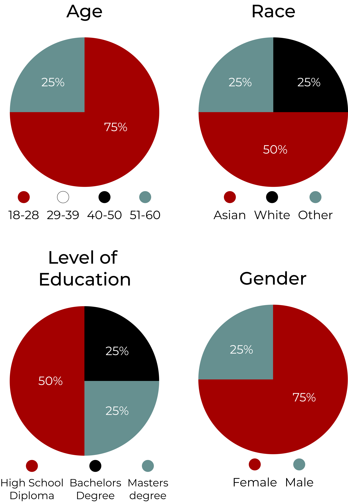
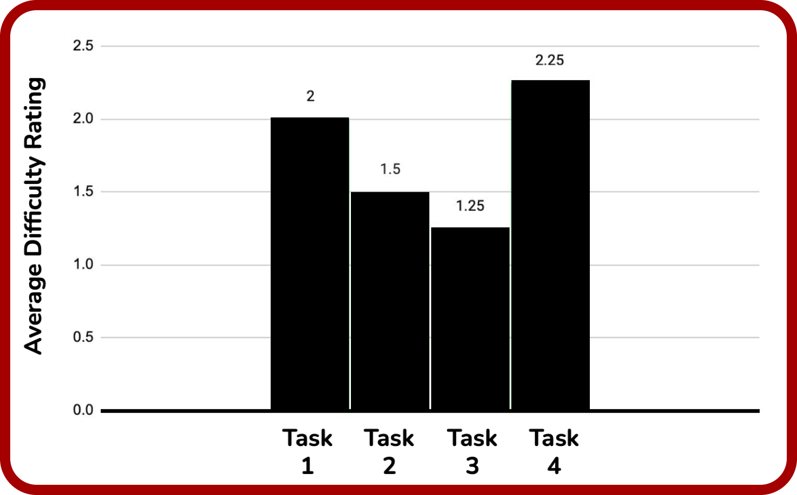
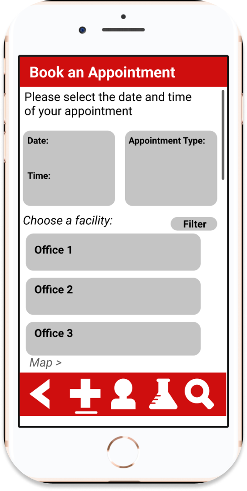
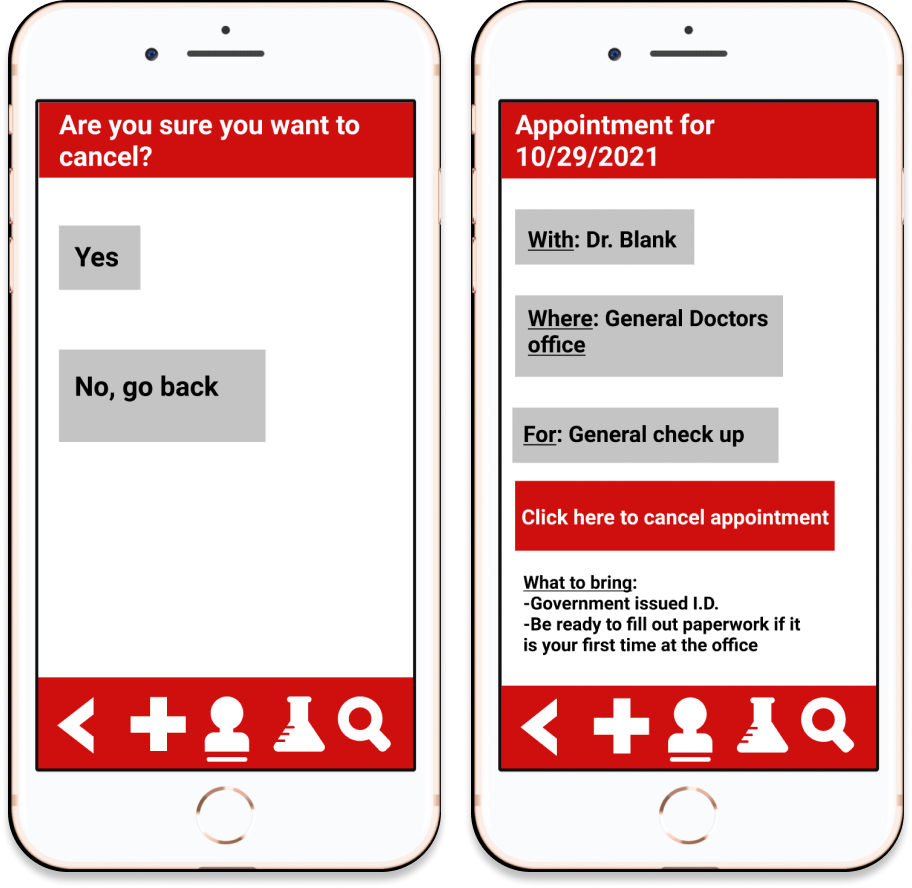
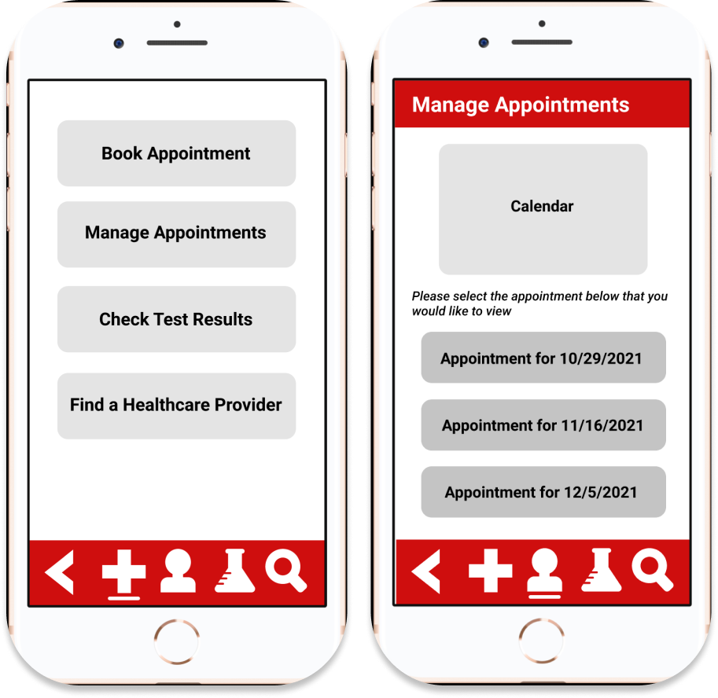
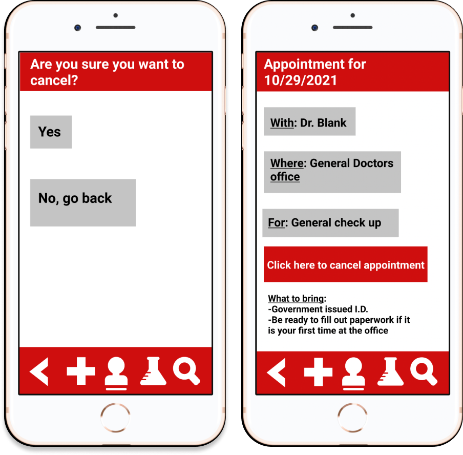

ForHealth
Enhancing healthcare decisions and convenience with a user-friendly mobile app, enabling seamless family healthcare management.

OVERVIEW
ABOUT
ForHealth is a mobile healthcare application aimed at enhancing individual health care decision-making by providing users with greater autonomy and convenience. This user-friendly app is both free and easily accessible, allowing families to conveniently manage and track their entire healthcare schedule in one place.
THE CHALLENGE
Our goal is to improve individual healthcare decision-making by providing users with a user-friendly, accessible, and free mobile application, simplifying family healthcare management while promoting autonomy and convenience.
RESPONSIBILIES
UX research, Research Overview, Task Difficulty, UX design
RESEARCHERS
Ritika Ramesh, Johna Yolo, Christopher Cleveland, Cole Harris
TIMELINES
10 weeks
7 weeks UX research
3 weeks UI/UX design
TOOLS
Figma, Procreate, Adobe Primiere Pro
HIGH LEVEL OBJECTIVES
User Engagement and Education
Develop interactive features and content within the app to educate users about healthcare options and best practices, increasing their understanding and engagement with their health-related decisions
Accessibility and Usability
Continuously enhance the app's user-friendliness, ensuring it remains accessible to a wide range of users, including those with limited technical proficiency, to facilitate seamless healthcare schedule management.
Scalability and Reach
Expand the app's user base and outreach efforts to serve a growing community, offering the benefits of autonomous healthcare management to an increasing number of individuals and families.
RESEARCH AND APPLICATION
THE RESEARCH
RESEARCH OVERVIEW
- Research studies were held in the participants home between the dates of November 15th-19th.
- 20 Minute 1 on 1 sessions held with one member of the research team.
- Prototypes were executed using researcher provided Apple or Android mobile phone.
- After each task, participants indicated their perceived ease of use using a 5-point Likert scale.
- Each task began at the home page.
PARTICIPANTS
- The study had 4 participants with ages ranging ages 22-53. There were 3 Females and 1 Male.
TASK DIFFICULTY
- Task 4, finding a new doctor, was identified as the most difficult task with an average difficulty rating of 2.25.
- Task 3, checking appointment details, was identified as the least difficult task with an average difficulty rating of 1.25.
CUSTOMER INPUT
Task 1: Booking an Appointment
“It seemed like I didn't get a lot of choices for appointment dates and times when booking.”
“There was no date function and all the options looked like they could be clicked.”
Task 2: Cancel an Appointment
“May have been easier to find as a stand-alone feature”
“Cancel appointment seemed to end abruptly with no cancel confirmation”
Task 3: Check Appointment Details
“The calendar was confusing”
“No problems”
Task 4: Check Appointment Details
“There was no options for specialization or to search for a specific physician or filters”
“I was curious about selecting the physician finder quiz”